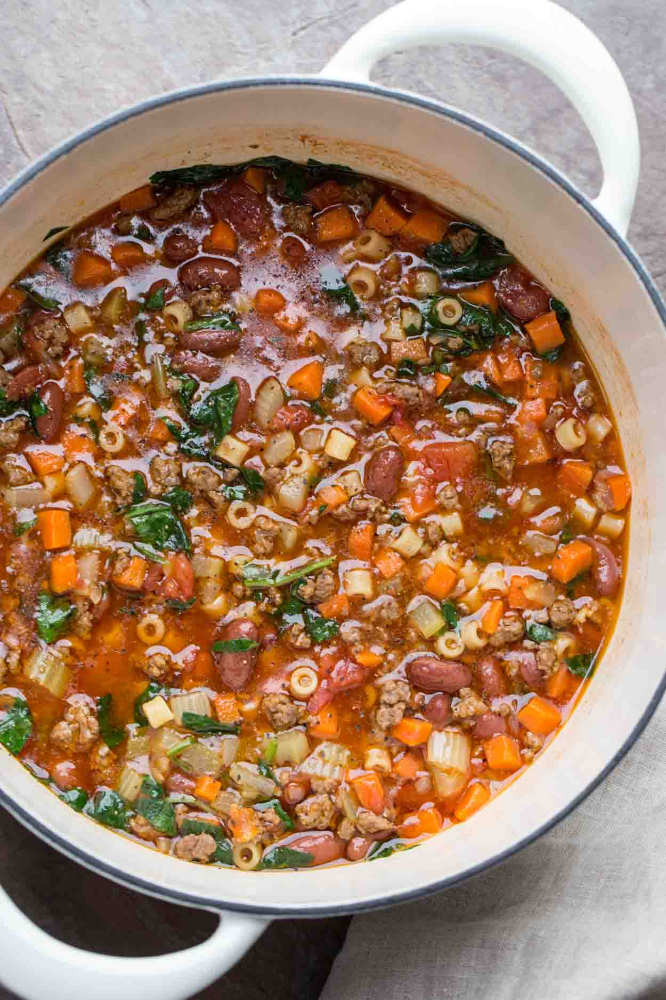

Pasta Fagoli

Description
A fall classic in my household! Pasta Fagoli is the perfect dish to
snuggle up to with family on a cold night. It comes together super quick
in one pot with just pantry staples!
Ingredients
- 1 yellow onion
- 2 carrots
- 2 stalks of celery
- 6 cloves of garlic
- 2 bay leaves
- 1 tsp dried oregano
- 1 14-oz can crushed tomatoes
- 2 cans of cannelini beans
- 1 cup small pasta of your preference
- 2 cups of chopped kale
- 1/4 cup parsley
- 1/2 of a lemon
Instructions
- cook veg in dutch oven. then add garlic till fragrant. add crushed tomatoes and cook for 10 minutes
- take half beans and 1.5 cup of veg and blend till smooth and add back to pot
- add water till covered and cook for 15 minutes
- add beans, pasta, kale and cook for 20 minutes
- add parsley and lemon juice to taste and serve